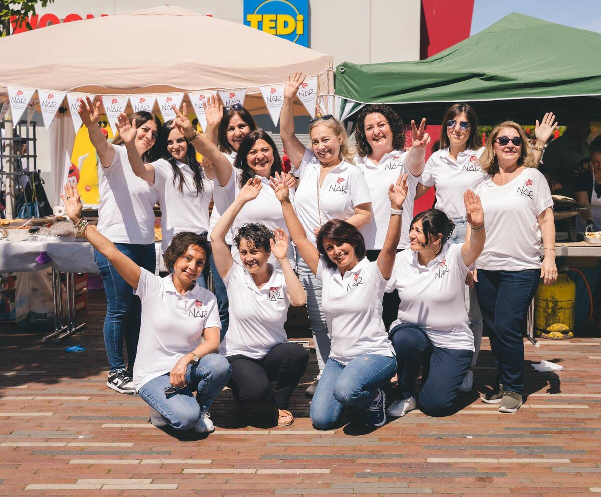

NAR Lichtblick – Frauen und Mädchen e.V.
Gemeinnütziger Verein für Bildung, Gleichberechtigung und Selbstbestimmung von Frauen und Mädchen in Köln-Chorweiler.
NAR ist ein gemeinnütziger Verein, der im Oktober 2014 in Köln-Chorweiler gegründet wurde. Die Gründungsmitglieder sind 12 Frauen, die durch mehrjährige soziale Gruppenarbeit zusammengewachsen sind und diese Erfahrungen gerne an andere Frauen und Mädchen weitergeben möchten.
Zweck des Vereins ist insbesondere die Förderung der schulischen Bildung, die Weiterbildung von sozial benachteiligten Frauen und Mädchen sowie die Förderung Ihrer Begabungen; Des Weiteren unterstützen wir Projekte für die Förderung ihrer sozialen und kulturellen Kompetenzen.
Zu unserem Tätigkeitsbereich gehört auch die Arbeit gegen Rassismus, Frauenunterdrückung, Gewalt an Frauen, jegliche Diskriminierung sowie Umweltverschmutzung. Zu diesem Zweck arbeiten und unterstützen wir auch gerne andere Organisationen.
Unser Verein finanziert sich aus Mitgliedsbeiträgen, Spenden und Einnahmen aus vielfältigen Aktivitäten und freut sich daher auf Ihre Unterstützung.
NAR Lichtblick für Frauen und Mädchen ist politisch unabhängig. Unsere Arbeit wird ausschließlich durch Spenden und Mitgliedsbeiträge finanziert. Ihre Unterstützung ermöglicht es uns, unsere Arbeit für Frauen und Mädchen zu sichern.
Spendenkonto
Bank: Deutsche Bank AG
Empfänger: Nar Lichtblick fuer Frauen und Mädchen e.V.
Kto-Nr.: 561884800
BLZ: 370 700 24
IBAN: DE50 3707 0024 0561 8848 00
BIC: DEUTDEDBKOE
Steuerliche Absetzbarkeit
Ihre Spende bzw. Mitgliedsbeiträge können Sie selbstverständlich als Sonderausgabe steuerlich absetzen.
Wie funktioniert das?
Für Spenden bis 200 Euro genügt dem Finanzamt Ihr Einzahlungsbeleg bzw. Ihr Kontoauszug zusammen mit den Angaben aus unserem Freistellungsbescheid.
NAR Lichtblick für Frauen und Mädchen bedankt sich für alle Spenden ab 200 Euro mit einer Spendenbescheinigung. Bitte denken Sie daran, bei der Überweisung Ihre Adresse anzugeben, damit wir Ihnen die Bescheinigung zuschicken können!
Unterstützen Sie unsere Arbeit
Jeder Beitrag hilft uns, unsere Projekte für sozial benachteiligte Frauen und Mädchen zu finanzieren:
- NAR-Mentoring: Begleitung von Mädchen auf ihrem schulischen Weg
- NAR-Patenschaft: Stipendien für Studentinnen
- Aktionen und Veranstaltungen im Stadtteil
- Arbeit gegen Rassismus, Frauenunterdrückung und Diskriminierung
Vielen Dank für Ihre Unterstützung!
Kontakt
NAR Lichtblick für Frauen und Mädchen e. V.
Usedomstr. 30
50765 Köln
E-Mail: info@narlichtblick.de
Mit diesem Projekt setzt sich NAR Lichtblick für Frauen und Mädchen e.V. für die Unterstützung der schulischen Bildung und Weiterbildung von sozial benachteiligten Frauen und Mädchen ein. Denn Bildung ist der Weg zur Selbstbestimmung und Gleichberechtigung der Frau in der Gesellschaft.
Wen unterstützen wir?
Studentinnen mit hervorragenden Leistungen aus unterschiedlichen Regionen der Türkei unabhängig ihrer Glaubensrichtung oder ethnischer Herkunft. Dank zahlreicher Spenden und dem Engagement unserer Mitglieder sind wir seit unserer Gründung Ende 2014 in der Lage, eine Schülerin und acht Studentinnen finanziell zu unterstützen.
Welche Kriterien werden von NAR Lichtblick geprüft?
Sowohl die Eltern der Studentinnen als auch die Studentinnen selbst müssen geringfügige Einkommensverhältnisse erfüllen.
Ein Transcript of Records über die Leistungen wird jedes Semester von den Studentinnen eingefordert.
Patenschaft übernehmen
Wer kann Pate/Patin werden?
Alle Privat- und juristischen Personen (Unternehmen, Firmen, Vereine etc.) können Pate/Patin werden. Zudem können auch mehrere Privatpersonen gemeinsam eine Patenschaft übernehmen.
Welche Verpflichtungen geht der Pate/die Patin ein?
Sie sollten bereit sein, monatlich mindestens 50 Euro zu spenden.
Es wird ein Vertrag über die Patenschaft abgeschlossen.
Dieser ist zum Ende des jeweiligen Semesters schriftlich kündbar.
Geförderte Studentinnen
Berfin: Materialwissenschaft und Werkstofftechnik (Izmir)
Ceylan: Vorschullehramt (Sinop)
Dilan: Physiotherapie und Rehabilitation (Malatya)
Tuğba: Informations- und Dokumentenmanagement (Istanbul)
Pınar: Elektrotechnik und Elektronik (Kırıkkale)
Manolya: Theater-Drama-Schauspiel (Istanbul)
Dank des intensiven Einsatzes und Engagements unserer Mitglieder und Unterstützer, haben sechs Hochschulstudentinnen die Möglichkeit für ein Stipendium erhalten.
Weitere Geförderte
Deniz: Oberstufenschülerin, Stipendium seit 2014 (Çorum)
Özden: Wirtschaft, 2015-2017 Hacettepe Universität, Fakultät für Wirtschaftswissenschaften (Ankara)
Mekiye: Musikstudium (Absolventin), 2015-2016 Marmara Universität (Istanbul)
Vielen Dank für die Unterstützung, das Vertrauen und die zahlreichen Spenden.
Unser Team für das Projekt besteht zurzeit aus zwei Studentinnen und einem Studenten, die sich bereit erklärt haben, dieses Projekt zu entwickeln und umzusetzen. Dieses Projekt wird von NAR Lichtblick für Frauen und Mädchen e.V. in Kooperation mit der türkischen Hochschulgruppe TUSCO (Turkish Students Association Cologne) der Universität zu Köln durchgeführt.
Das Projekt „NAR-Mentoring" soll sozial benachteiligten Mädchen mit und ohne Migrationshintergrund und ohne akademisches Umfeld ein Wegweiser in ihrer schulischen Laufbahn sein.
Ziel ist es, in erster Linie Mädchen und junge Frauen zum Abitur zu motivieren, zu begleiten und betreuen. Weiterhin bieten wir Unterstützung bei ihrer Studienwahl an und helfen bei dem Bewerbungsprozess.
Wen unterstützen wir?
Unsere Zielgruppe sind insbesondere Mädchen jeglicher Nationalitäten ab Klasse 8 aller Schulformen.
Umsetzung
Jeden ersten und dritten Montag sind die Mentorinnen und Mentoren persönlich von 18 bis 20 Uhr in der Kulturbrücke, Athener Ring 34, 50765 Köln (Chorweiler) erreichbar. Außerdem ist jederzeit eine Kontaktaufnahme über folgende E-Mail Adresse möglich: mentoring@narlichtblick.de
Zum Flohmarkt kam dann der Essensstand mit Sucuk-Döner, Süßspeisen und weiteren kulinarischen Leckereien dazu.
Bei dieser Gelegenheit haben wir mit Stolz den Start für zwei neue Projekte an den Tag gelegt.
Wir werden auch weiterhin unser Engamement für die Bildung, Gleichberechtigung und Selbstbestimmung der Frauen einsetzen.
Danke vielmals für das bisherig gezeigte Interesse und eure Unterstützung auf diesem Weg.
Der Weltfrauentag solle daran erinnern, wie Frauen in der Vergangenheit für ihre Rechte gekämpft haben. Bis heute ist es Tradition, Frauen an diesem Tag Blumen zu schenken, um ihnen Respekt und Wertschätzung entgegenzubringen.
Doch der Kampf für Gleichberechtigung ist (leider) noch nicht zu Ende. Auch 2022 leben wir noch in patriarchalen Strukturen, Frauen übernehmen einen Großteil der unbezahlten Sorgearbeit und werden auch in der Lohnarbeit schlechter bezahlt.
Jede dritte Frau in Deutschland wird mindestens einmal in ihrem Leben Opfer von physischer und/oder sexualisierter Gewalt. Frauen brauchen und wollen Gleichberechtigung, nicht nur auf dem Papier, sie wollen gleiche Chancen, gleiche Löhne, gewaltfreie Beziehungen, faire Arbeitsbedingungen, Strafen für Täter, ein Leben ohne Angst – keine Blumen.
Natürlich gab es auch was für das Wohlbefinden unserer Standbesucher. Es gab Sucuk-Tasche (Knoblauchwurst), Süßspeisen, Kuchen, Kaffee, Tee und Ayran.
Veranstaltung zur Stärkung der Frauenrechte und Förderung des Dialogs.
Internationaler Frauentag für Gleichberechtigung und Frauenrechte.
Liebe NARfreunde, heute haben wir am Flohmarkt in Köln- Ossendorf teilgenommen. Mit großem Einsatz und Engagement haben uns viele Mitglieder und Freunde unterstützt. Vielen Dank für Eure Spenden. Hier sind einige Eindrücke von diesem Tag Liebe Grüße
Wir möchten der Stadt Köln Chorweiler und den Organisatoren für die tolle Zusammenarbeit und die gute Versorgung danken.
Des Weiteren ein großes Dankeschön an Egetürk Köln für die Sucuk Spende, Simidim Restaurant in Köln Chorweiler für die Simit's (Sesamringe) und Fa. Göreme für das zur Verfügung gestellte Kühlgerät.
Um einen Eindruck von dem Fest zu bekommen, teilen wir einige der vielen schönen Momente mit euch.
Nächstes Jahr haben wir wieder vor ein Teil dieser Veranstaltung zu sein.
Internationaler Frauentag für Gleichberechtigung und Frauenrechte.
Kleidersammlung und -verteilung für bedürftige Frauen und Familien.
Unser Verkaufsstand vom Trödelmarkt am 07. und 14.06.2015. Wir finden es eine tolle Idee, dass Dinge, die nicht mehr gebraucht werden für einen guten Zweck zu verkaufen. Es wurden allerlei Dinge angeboten, die über den Jahren auf den Dachböden Staub gefangen hatten. Dazu zählten allerlei schöne Dinge und Raritäten. Die Vereinskasse hat sich über den Erlös sehr gefreut.
Aktion gegen Gewalt an Frauen und für Frauenrechte.
Einige Eindrücke aus unsere Eröffnungs / Informationsveranstalltung vom 09.05 2015
Angaben gemäß § 5 TMG:
NAR Lichtblick für Frauen und Mädchen e. V.
Athener Ring 34
50765 Köln
Vertreten durch:
Gülay Doğan
Gülhan Türkmen
Sultan Şakalakoğlu
Kontakt:
E-Mail: info@narlichtblick.de
Registereintrag:
Eintragung im Vereinsregister.
Registergericht: Amtsgericht Köln
Registernummer: VR 18288
Umsatzsteuer-ID:
Umsatzsteuer-Identifikationsnummer gemäß §27 a Umsatzsteuergesetz: 217/5959/2378
NAR Lichtblick für Frauen und Mädchen e.V.
Eintragung im Vereinsregister beim Amtsgericht Köln, Registernummer: VR 18288
§ 1 Name, Sitz
- Der Verein trägt den Namen NAR Lichtblick für Frauen und Mädchen e.V.. Er soll in das Vereinsregister eingetragen werden.
- Er hat seinen Sitz in Köln.
- Das Geschäftsjahr ist das Kalenderjahr.
§ 2 Zweck, Aufgaben
- Der Verein verfolgt ausschließlich und unmittelbar gemeinnützige bzw. mildtätige Wohlfahrtszwecke ohne konfessionelle und parteipolitische Bindungen im Sinne des Abschnitts „Steuerbegünstigte Zwecke" der Abgabenordnung (§§ 51 ff. AO) in der jeweils gültigen Fassung.
- Zweck des Vereins ist insbesondere
- die Förderung der schulischen Bildung und Weiterbildung von sozial benachteiligten Frauen und Mädchen sowie die Förderung Ihrer Begabungen
- die Förderung sozialer und kultureller Kompetenzen von Frauen und Mädchen
- Öffentlichkeits- und Vernetzungsarbeit
- Verwirklichung der Ziele des Vereins
- Herausgabe und Publikationen aller Art, um die Verwirklichung der Ziele des Vereins zu erleichtern
- Öffentlichkeitsarbeit in Form von Pressemitteilungen zu besonderen Anlässen und Zusammenarbeit mit Funk und Fernsehen
- Zusammenarbeit mit zuständigen deutschen, europäischen und anderen ausländischen Organisationen
- Organisierung und Darstellung von Ausstellungen und Lesungen
- Der Verein kann sich in folgenden Bereichen an politischen Aktivitäten/Arbeiten beteiligen: Rassismus, Frauenunterdrückung, Gewalt an Frauen, jegliche Diskriminierung, Umweltverschmutzung
- Der Verein kann im In- und Ausland tätig werden.
§ 3 Selbstlosigkeit
- Der Verein ist selbstlos tätig, er verfolgt nicht in erster Linie eigenwirtschaftliche Zwecke.
- Mittel des Vereins dürfen für die satzungsmäßigen Zwecke verwendet werden. Die Mitglieder des Vereins dürfen in ihrer Eigenschaft als Mitglieder keine Zuwendungen aus den Mitteln des Vereins erhalten.
- Es darf keine Person durch Ausgaben, die dem Zweck des Vereins zuwider sind oder durch unverhältnismäßig hohe Vergütungen begünstigt werden.
§ 4 Mitgliedschaft
- Mitglied des Vereins kann jede volljährige Person werden, die seine Ziele unterstützt (§2).
- Über den Antrag auf Aufnahme in den Verein entscheidet der Vorstand.
- Jeder, der sich um den Verein verdient gemacht hat, kann durch Beschluss des Vorstands Ehrenmitglied werden.
- Die Mitgliedschaft endet durch Austritt, Ausschluss oder Tod.
- Der Austritt eines Mitglieds ist nur zum Quartalsende möglich. Er erfolgt durch schriftliche Erklärung gegenüber dem Vorstand unter Einhaltung einer Frist von einem Monat zum Quartalsende.
- Wahlrecht für Neumitglieder erst nach sechs Monaten Mitgliedschaft möglich.
§ 5 Beiträge
Die Mitglieder zahlen monatlich Beiträge nach Maßgabe eines Beschlusses der Mitgliederversammlung (§8). Zur Festlegung der Beitragshöhe und -fälligkeit ist eine 2/3 Mehrheit in der Mitgliederversammlung anwesenden stimmberechtigten Vereinsmitglieder erforderlich. Ehrenmitglieder sind nicht verpflichtet, Mitgliedsbeiträge zu zahlen. Schülerinnen, Auszubildende und Studentinnen können beitragsfrei Mitglied werden.
§ 6 Organe des Vereins
Die Organe des Vereins sind:
- der Vorstand
- die Mitgliederversammlung
- Kassenprüferin
§ 7 Der Vorstand
- Der Vorstand besteht aus 3 Mitgliedern.
- Der Vorstand im Sinne des § 26 BGB sind: Der/die Vorsitzende, der/die stellvertretende Vorsitzende sowie der/die Kassierer/in. Jeweils zwei Vorstandsmitglieder sind gemeinsam vertretungsberechtigt.
- Der Vorstand wird von der Mitgliederversammlung auf die Dauer von zwei Jahren, ab dem Zeitpunkt der Wahl an gewählt. Die Wiederwahl der Vorstandmitglieder ist möglich. Neumitglieder dürfen vor Ablauf von zwei Jahren ab Beginn der Mitgliedschaft nicht in den Vorstand gewählt werden. Vor Ablauf dieser zwei Jahre ist die Wahl nur nach Zustimmung aller Vorstandsmitglieder möglich. Der Vorsitzende wird von der Mitgliederversammlung in einem besonderen Wahlgang bestimmt. Die jeweils amtierenden Vorstandsmitglieder bleiben nach Ablauf ihrer Amtsperiode so lange im Amt, bis ihre Nachfolger gewählt sind.
- Dem Vorstand obliegt die Führung der laufenden Geschäfte des Vereins. Er hat insbesondere folgende Aufgaben:
- Erstellung eines Arbeits- und Haushaltsplanes
- Erstellung der Jahresabrechnung und eines Jahresberichtes zur Vorlage bei der Mitgliedersammlung.
- Vorstandssitzungen finden mindestens 4 Mal jährlich statt. Die Einladung zu Vorstandssitzungen erfolgt durch die/den Vorsitzende/n schriftlich unter Einhaltung einer Frist von mindestens 10 Werktagen. Vorstandssitzungen sind beschlussfähig, wenn 2/3 der Vorstandsmitglieder anwesend sind.
- Der Vorstand fasst seine Beschlüsse mit einfacher Mehrheit. Beschlüsse des Vorstands können bei Eilbedürftigkeit auch schriftlich oder fernmündlich gefasst werden, wenn alle Vorstandsmitglieder ihre Zustimmung zu dem Verfahren schriftlich oder fernmündlich erklären. Schriftlich oder fernmündlich gefasste Vorstandsbeschlüsse sind schriftlich niederzulegen und von allen Vorstandsmitgliedern zu unterzeichnen.
§ 8 Die Mitgliederversammlung
- Die Mitgliederversammlung ist einmal jährlich einzuberufen.
- Eine außerordentliche Mitgliederversammlung ist einzuberufen, wenn es das Vereinsinteresse erfordert oder wenn die Einberufung von 1/3 der Vereinsmitglieder schriftlich und begründet verlangt wird.
- Die Einberufung der Mitgliederversammlung erfolgt schriftlich durch die/den Vorsitzende/n unter Wahrung einer Frist von zwei Wochen bei gleichzeitiger Bekanntgabe der Tagesordnung. Die Tagesordnung kann durch Mehrheitsbeschluss in der Mitgliederversammlung in der Sitzung ergänzt oder geändert werden; dies gilt nicht für Satzungsänderungen. Die Frist beginnt mit dem Zugang des Einladungsschreibens. Das Einladungsschreiben gilt dem Mitglied als zugegangen, wenn es an die letzte vom Mitglied dem Verein schriftlich bekanntgegebene Adresse gerichtet ist.
- Die Mitgliederversammlung als das oberste Beschluss fassende Vereinsorgan ist grundsätzlich für alle Aufgaben zuständig, sofern bestimmte Aufgaben gemäß dieser Satzung nicht einem anderen Vereinsorgan übertragen wurden. Ihr sind insbesondere die Jahresrechnung und der Jahresbericht zur Beschlussfassung über die Genehmigung und die Entlastung des Vorstands schriftlich vorzulegen. Die Mitgliederversammlung entscheidet insbesondere über:
- die Wahl des Vorstands
- die Aufgaben des Vereins
- den An- und Verkauf sowie Belastung von Grundbesitz
- die Beteiligung an Gesellschaften oder Vereinen
- die Aufnahme von Darlehen
- Mitgliedsbeiträge
- Satzungsänderungen
- Auflösung des Vereins
- Jede satzungsmäßig einberufene Mitgliederversammlung wird als beschlussfähig anerkannt ohne Rücksicht auf die Zahl der erschienenen Vereinsmitglieder. Jedes Mitglied hat eine Stimme. Das Stimmrecht ist nicht übertragbar.
- Die Mitgliederversammlung fasst ihre Beschlüsse mit einfacher Mehrheit. Bei Stimmengleichheit gilt ein Antrag als abgelehnt.
- Die Mitgliederversammlung wählt bei den Vorstandswahlen für die Dauer von zwei Jahren zusätzlich eine Kassenprüferin. Diese darf nicht Mitglied des Vorstandes sein. Wiederwahl ist zulässig. Die Kassenprüferin prüft halbjährig den Haushaltsplan und Finanzbericht des Vorstandes.
§ 9 Änderung des Vereinszwecks/Satzungsänderung
- Für die Änderung des Vereinszwecks und für andere Satzungsänderungen ist eine 2/3-Mehrheit der erschienenen Vereinsmitglieder erforderlich. Über Satzungsänderungen kann in der Mitgliederversammlung nur abgestimmt werden, wenn auf diesen Tagesordnungspunkt bereits in der Einladung zur Mitgliederversammlung hingewiesen wurde und der Einladung sowohl der bisherige, als auch die Neufassung, beigefügt wurden.
- Satzungsänderungen, die von Aufsichts-, Gerichts- oder Finanzbehörden aus formalen Gründen verlangt werden, kann der Vorstand von sich aus vornehmen. Diese Satzungsänderungen müssen allen Vereinsmitgliedern alsbald schriftlich mitgeteilt werden.
§ 10 Beurkundung von Beschlüssen
Die in Vorstandssitzungen und in Mitgliederversammlungen gefassten Beschlüsse sind schriftlich niederzulegen und von der/dem Vorsitzenden zu unterzeichnen.
§ 11 Auflösung des Vereins und Vermögensbildung
- Für den Beschluss, den Verein aufzulösen, ist eine 3/4-Mehrheit der in der Mitgliederversammlung anwesenden Mitglieder erforderlich. Der Beschluss kann nur von einer mit einer Frist von einem Monat einzuberufenden außerordentlichen Mitgliederversammlung gefasst werden.
- Bei Auflösung des Vereins oder bei Wegfall steuerbegünstigter Zwecke fällt das Vermögen des Vereins an den Paritätischen Wohlfahrtsverband Nordrhein-Westfalen, der es ausschließlich und unmittelbar für gemeinnützige bzw. mildtätige Wohlfahrtszwecke zu verwenden hat.
Köln, den 06.05.2019
Datenschutzerklärung
Wer wir sind
Die Adresse unserer Website ist: http://narlichtblick.de.
Welche personenbezogenen Daten wir sammeln und warum wir sie sammeln
Kommentare
Wenn Besucher Kommentare auf der Website schreiben, sammeln wir die Daten, die im Kommentar-Formular angezeigt werden, außerdem die IP-Adresse des Besuchers und den User-Agent-String (damit wird der Browser identifiziert), um die Erkennung von Spam zu unterstützen.
Aus deiner E-Mail-Adresse kann eine anonymisierte Zeichenfolge erstellt (auch Hash genannt) und dem Gravatar-Dienst übergeben werden, um zu prüfen, ob du diesen benutzt. Die Datenschutzerklärung des Gravatar-Dienstes findest du hier: https://automattic.com/privacy/. Nachdem dein Kommentar freigegeben wurde, ist dein Profilbild öffentlich im Kontext deines Kommentars sichtbar.
Medien
Wenn du ein registrierter Benutzer bist und Fotos auf diese Website lädst, solltest du vermeiden, Fotos mit einem EXIF-GPS-Standort hochzuladen. Besucher dieser Website könnten Fotos, die auf dieser Website gespeichert sind, herunterladen und deren Standort-Informationen extrahieren.
Cookies
Wenn du einen Kommentar auf unserer Website schreibst, kann das eine Einwilligung sein, deinen Namen, E-Mail-Adresse und Website in Cookies zu speichern. Dies ist eine Komfortfunktion, damit du nicht, wenn du einen weiteren Kommentar schreibst, all diese Daten erneut eingeben musst. Diese Cookies werden ein Jahr lang gespeichert.
Falls du ein Konto hast und dich auf dieser Website anmeldest, werden wir ein temporäres Cookie setzen, um festzustellen, ob dein Browser Cookies akzeptiert. Dieses Cookie enthält keine personenbezogenen Daten und wird verworfen, wenn du deinen Browser schließt.
Wenn du dich anmeldest, werden wir einige Cookies einrichten, um deine Anmeldeinformationen und Anzeigeoptionen zu speichern. Anmelde-Cookies verfallen nach zwei Tagen und Cookies für die Anzeigeoptionen nach einem Jahr. Falls du bei der Anmeldung „Angemeldet bleiben" auswählst, wird deine Anmeldung zwei Wochen lang aufrechterhalten. Mit der Abmeldung aus deinem Konto werden die Anmelde-Cookies gelöscht.
Wenn du einen Artikel bearbeitest oder veröffentlichst, wird ein zusätzlicher Cookie in deinem Browser gespeichert. Dieser Cookie enthält keine personenbezogenen Daten und verweist nur auf die Beitrags-ID des Artikels, den du gerade bearbeitet hast. Der Cookie verfällt nach einem Tag.
Eingebettete Inhalte von anderen Websites
Beiträge auf dieser Website können eingebettete Inhalte beinhalten (z. B. Videos, Bilder, Beiträge etc.). Eingebettete Inhalte von anderen Websites verhalten sich exakt so, als ob der Besucher die andere Website besucht hätte.
Diese Websites können Daten über dich sammeln, Cookies benutzen, zusätzliche Tracking-Dienste von Dritten einbetten und deine Interaktion mit diesem eingebetteten Inhalt aufzeichnen, inklusive deiner Interaktion mit dem eingebetteten Inhalt, falls du ein Konto hast und auf dieser Website angemeldet bist.
Wie lange wir deine Daten speichern
Wenn du einen Kommentar schreibst, wird dieser inklusive Metadaten zeitlich unbegrenzt gespeichert. Auf diese Art können wir Folgekommentare automatisch erkennen und freigeben, anstelle sie in einer Moderations-Warteschlange festzuhalten.
Für Benutzer, die sich auf unserer Website registrieren, speichern wir zusätzlich die persönlichen Informationen, die sie in ihren Benutzerprofilen angeben. Alle Benutzer können jederzeit ihre persönlichen Informationen einsehen, verändern oder löschen (der Benutzername kann nicht verändert werden). Administratoren der Website können diese Informationen ebenfalls einsehen und verändern.
Welche Rechte du an deinen Daten hast
Wenn du ein Konto auf dieser Website besitzt oder Kommentare geschrieben hast, kannst du einen Export deiner personenbezogenen Daten bei uns anfordern, inklusive aller Daten, die du uns mitgeteilt hast. Darüber hinaus kannst du die Löschung aller personenbezogenen Daten, die wir von dir gespeichert haben, anfordern. Dies umfasst nicht die Daten, die wir aufgrund administrativer, rechtlicher oder sicherheitsrelevanter Notwendigkeiten aufbewahren müssen.
© 2016 NAR Lichtblick
Hier finden Sie unsere jährlichen Tätigkeitsberichte als PDF-Dokumente zum Download.